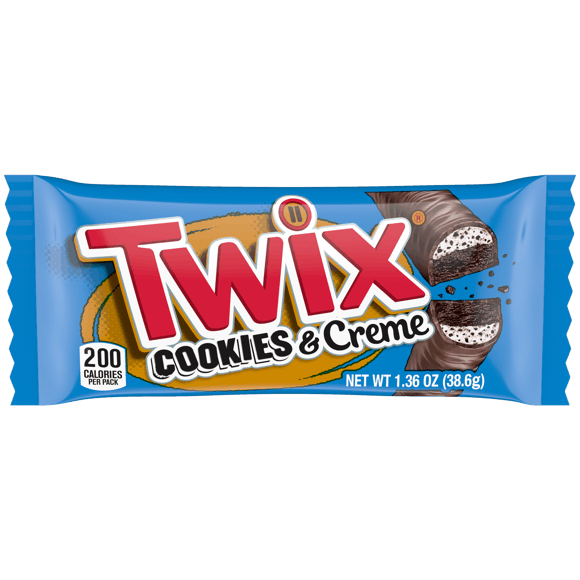
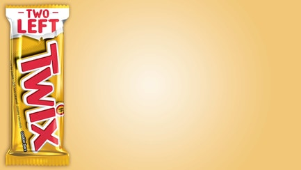
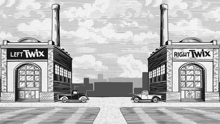
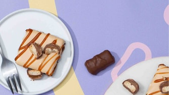

Do you prefer Left TWIX®’s smooth caramel flowed onto crispy cookie and bathed in chocolate?
Or Right TWIX®’s crunchy cookie cascaded with soft caramel and cloaked in milk chocolate?
Product
Double trouble: Twix Cookies & Creme
Discover Our products
Left Twix products
 ExploreRight Twix products
ExploreRecipe
Twix Cookies & Creme Cheesecake Mashup
Try itMade with
Twix Cookies & Creme Bar
See details Where to buyAll the twix you need. twice.
The tale of seamus & earl
Discover the story of the epic schism between our founders, s parking the creation of Left TWIX® and Right TWIX®
 ExploreRecipes to make Twix your own
Whether you’re a Left TWIX® aficionado or a Right TWIX® connoisseur, we’ve got recipes you’ll love to make and share.
 Explore